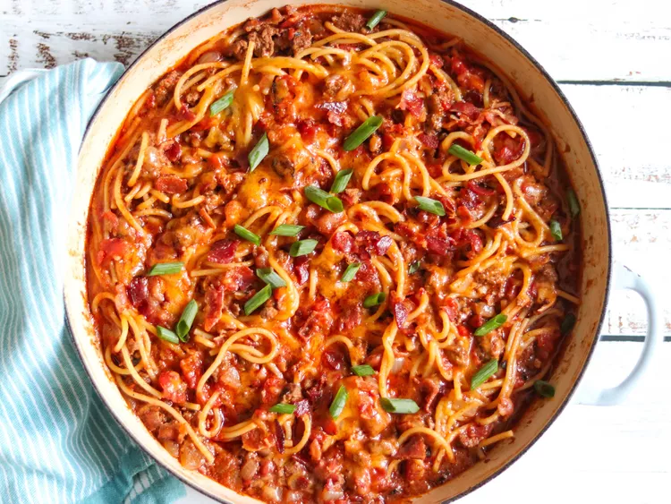

spaghetti

Description
This is spaghetti with bacon,cheese,and pasta in a spicy beef and tomato sauce. It can be cooked in a cast iron skillet.
Ingredients
- 6 strips of bacon
- 1 chopped onion
- 2 cloves of minced garlic
- 1/2 teaspoon salt
- 1/4 teaspoon black pepper
- 1 pound of ground beef
Steps
- Place bacon in pan and cook over medium-high heat
- add onion to same pan and saute until softened
- add garlic, salt, and pepper
- add ground beef and cook for about 5 minutes